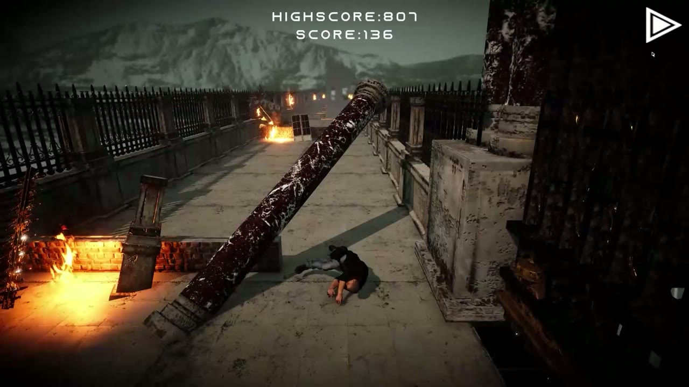
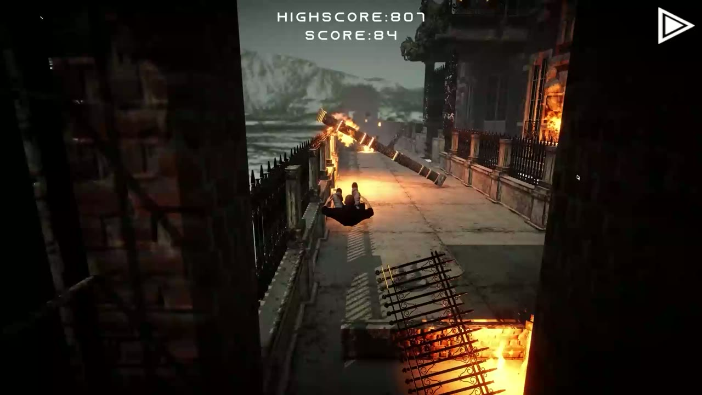
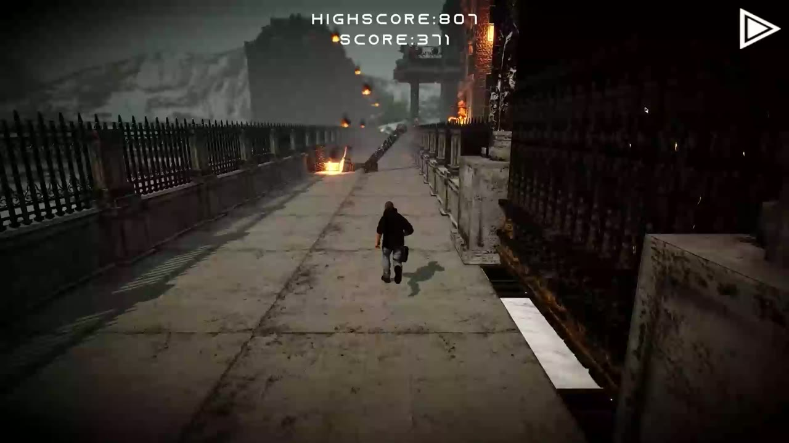

Broken Palace
A palace that is actively coming down around you, a corridor full of fire, and a camera that won't let you look away from what's behind.
One uninterrupted run from the build — including the part where the floor stops being a floor.
01The idea
Endless runners usually fail in one of two ways: nothing changes, or everything changes too fast to read. I wanted the level itself to be the pressure — the palace collapsing is the timer, so you never need a countdown on screen.
That gave me a design rule I still use: every obstacle has to be readable from at least a second away. If you can't see it coming, it isn't difficulty, it's luck.
02What's actually in the build
- A corridor that never ends because it recycles: segments are pooled and reused ahead of the player, so the run keeps producing new floor without a loading screen or a frame drop.
- Obstacles that ask three different questions — fallen columns you dodge, burning debris you go around, and gaps where the floor gives way under your feet.
- A third-person chase camera tuned so the collapse stays visible in frame without stealing the space you need to react.
- Score and high score that survive a restart, because a runner without a number to beat is just walking.
- A clean pause flow — resume, restart, main menu — so breaking a good run doesn't mean killing the app.
- Atmosphere doing the heavy lifting: wrought-iron fences, fire along both walls, fog, and mountains that exist purely so the corridor feels like it's somewhere.
03What broke first
Three things fought me, in this order:
- Hitching when new floor spawned. Instantiating a segment mid-run is a stutter you can feel, and in a game about speed a stutter reads as unfair. Pooling the segments and spawning them out of view fixed it.
- A camera that was too brave. Close behind the character looked cinematic until the first gap — by the time you saw it, you were in it. Pulling back and raising the angle cost a little drama and bought back fairness.
- Too much fire. The first version lit everything, which meant nothing stood out. Taking fire off the safe path and keeping it on the hazards turned the lighting into a wayfinding tool.
Lighting is a UI element. If the bright things are the dangerous things, players learn your level without reading a word.
04What I'd do next
- Pickups placed near the edge of safety, so risk has a reward attached to it.
- Three or four palace zones that change the lighting and the obstacle mix, so a long run has chapters.
- A difficulty curve driven by obstacle density rather than raw speed — speed alone just removes reaction time.
- A run summary: distance, best stretch, and exactly where it ended.
05Frames


